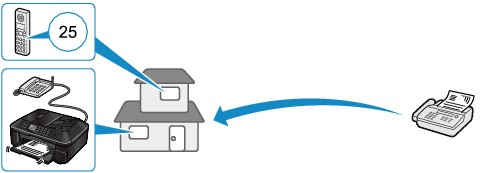

The machine has various receiving functions as follows.
For details, refer to the on-screen manual: Advanced Guide.
 Remote Reception
Remote ReceptionIf the machine is located away from the telephone, pick up the handset of the telephone connected to the machine and dial 25 (the remote reception ID) to receive faxes (remote reception).
The remote reception can be enabled or disabled with Remote RX.
Select ON to change Remote RX ID (remote reception ID).
